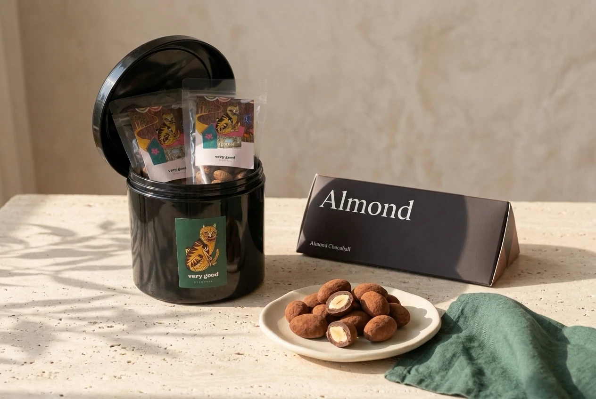
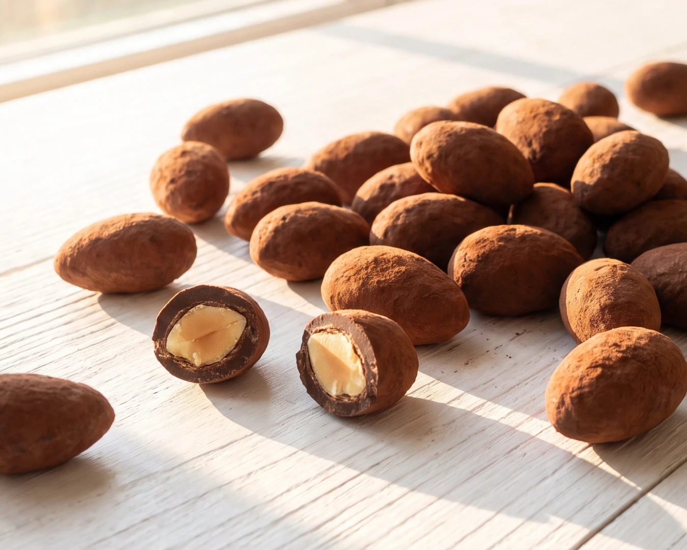
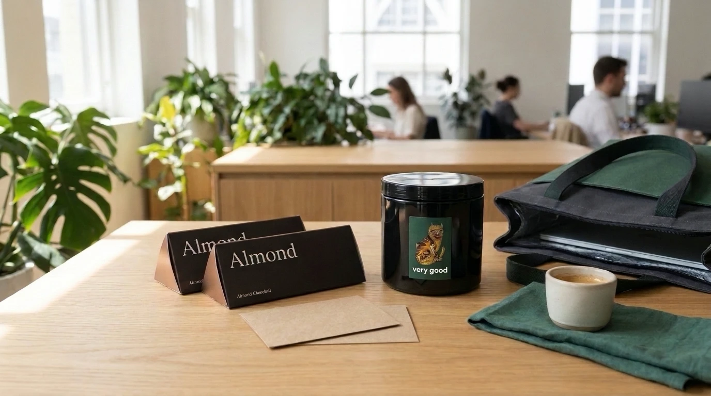

VERYGOOD JOURNAL · SUMMER GIFTING & PACKAGING GUIDE
How low-moisture cocoa-dusted almonds, sealed pouches inside a reusable canister, and structured triangle gift boxes handle Sydney’s warm season better than fragile filled assortments.
In Australia, Christmas and end-of-year gifting arrive in warm late spring and summer weather. Choosing chocolate as a colleague thank-you, host gift or shared office treat means thinking beyond flavour alone—texture, moisture and packaging all decide how well that gift handles a Sydney commute.[7][25]
Filled bonbons and cream-rich truffles look celebratory, yet soft centres are sensitive to ambient warmth and sudden temperature shifts.[20][25] Cocoa-dusted roasted almond chocolates in structured triangle gift boxes or reusable sealed canisters offer a calmer, cleaner way to gift during warmer months.
KEY TAKEAWAY · LOW-MOISTURE CHOCOLATES & SEALED PACKAGING
Match the format to how the recipient will store and share it: choose the Black Canister (2 × 80g sealed pouches) for shared desks and pantries, or the structured 80g Triangle Box for neat individual desk-drops.

Two practical summer gifting formats: the reusable Black Canister holding two sealed 80g pouches on the left, and the rigid 80g Triangle Box beside cocoa-dusted almond chocoballs on the right.
Confectionery fillings behave very differently once summer arrives. Valrhona defines ganache as an emulsion combining fat-based chocolate with water-based ingredients such as fresh cream, infusions or fruit purée—a structure prized for its melt, yet delicate under heat and moisture.[20]
Whole roasted almonds built up with tempered chocolate layers and finished in fine cocoa powder carry very little moisture. Without a liquid dairy centre, panned almond chocolates feel tidy to share by hand, resist sticky smudges on warm fingers and keep better when stored in a cool, dry office drawer or pantry.[25]
STRUCTURE & STABILITY · DRY NUT CENTRES VS. SOFT EMULSIONS
DRY PANNED ALMONDS
Crisp Roasted Core & Cocoa Dusting
Minimal moisture inside a firm tempered chocolate shell dusted with dry cocoa powder. Neat to pick up by hand and forgiving during cool indoor gifting.[25]
A well-made almond chocoball relies on balance across three dry components: a crisp roasted whole almond at the centre, an even tempered dark couverture shell and a light dusting of matte cocoa powder.
Even low-moisture chocolate needs airtight protection from humidity and kitchen odours.[25] Sealed packaging prevents damp air from dulling the cocoa exterior while protecting the roasted nut core from stale flavours until the pack is opened.[25]

Cross-section showing the crisp whole roasted almond surrounded by tempered chocolate and finished in dry cocoa powder.
When ordering chocolate gifts for an Australian team or holiday table, matching the container to the occasion prevents waste and protects the chocolates in transit. Our Almond Chocolate lineup offers two signature presentation styles alongside classic sealed pouches:
PACKAGING FORMATS · BUILT FOR DESKS, HAMPERS & COMMUTES
SHARED DESK & KEEPSAKE
Black Canister (2 × 80g)
A reusable lidded matte-black tub housing two separately sealed 80g zip pouches. Open one pouch now while keeping the second fresh inside.
Best for tea rooms, family gifts & keepsake storage.
INDIVIDUAL GIFT DROP
Triangle Gift Box (80g)
A structured dark chocolate-toned prism gift box holding 80g. Rigid angled walls keep their crisp silhouette inside tote bags and hampers.
Best for Secret Santa, host gifts & client desk-drops.
BULK TEAM SHARING
Sealed Pouches (80g / 6-Pack)
Lightweight zip-sealed pouches that pack neatly into an insulated cooler bag when distributing multiple gifts across an entire office.
Best for multi-person team drops & custom hampers.
WARM-WEATHER GIFTING · THREE PRACTICAL HABITS
• Keep boxes out of parked cars and direct sun: Haigh’s Chocolates notes that chocolate keeps best in cool, dry conditions away from heat; even brief pauses inside a sunlit vehicle can push chocolate beyond comfortable temperatures.[7][25]
• Let chilled boxes warm slowly before opening: If gifts are held in a cool space or insulated cooler during travel, keep the canister, box or pouch sealed until it settles back to room temperature so surface condensation does not form.[25]
• Share clear allergen details for group gifts: Almond chocolates contain tree nuts alongside chocolate ingredients, so label shared office drops clearly for guests with nut or dairy allergies.[23]
WORKPLACE & CORPORATE GIFTING · FSANZ ALLERGEN GUIDANCE
Because roasted almond confections contain tree nuts and dairy-containing chocolate ingredients, keep whole-group allergen information clear before distributing individual triangle boxes or canisters across mixed offices.[23]

Desk-ready gifting in warm weather: pair rigid 80g Triangle Boxes with handwritten notes for individual colleagues, keep a Black Canister in the team room, and transport packs inside an insulated tote.
VERYGOOD CHOCOLATE · MELROSE PARK PICKUP · SYDNEY
[7] https://www.foodstandards.gov.au/business/food-safety/transporting-food-safely — FSANZ — Transporting food safely
[20] https://www.valrhona.com/en/l-ecole-valrhona/discover-l-ecole-valrhona/chocolate-terminology/chocolate-emulsion — Valrhona — Chocolate emulsion
[23] https://www.foodstandards.gov.au/consumer/labelling/allergen-labelling — FSANZ — Allergen labelling for consumers
[25] https://haighschocolates.com.au/how-to-care-for-your-chocolate — Haigh’s Chocolates — How to care for your chocolate